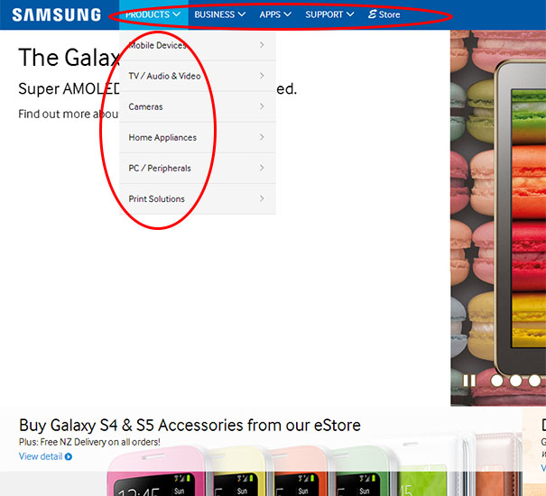
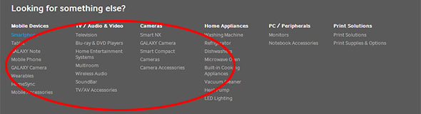

NAVIGATION
The SAMSUNG New Zealand webpage provides a few navigations for different purposes.
The main navigation clearly guides visitors to find information and the navigation is comprised of which are common guide as seen photo.1 below.

phto.1 Main Navigation
Whereas the bottom Navigation guides visitors who want to further information about SAMSUNG or their other products more specifically as seen photo.2 below.

phto.2 Bottom Navigation